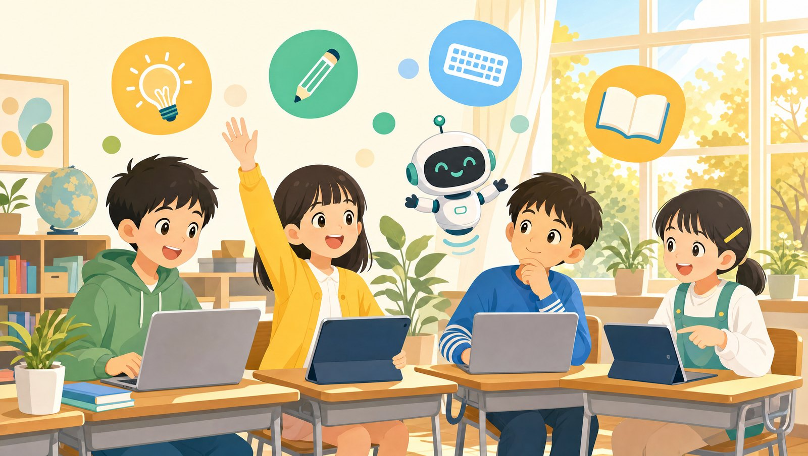
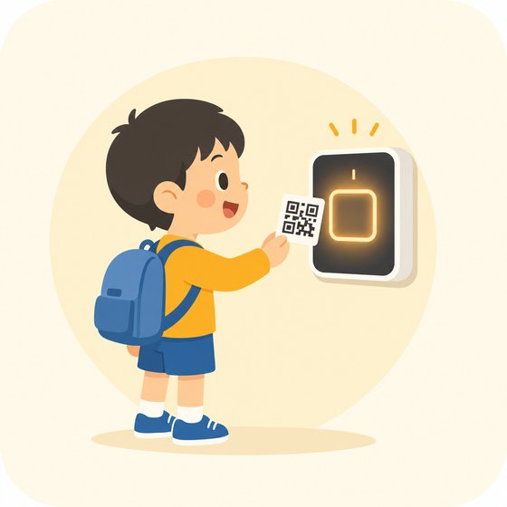
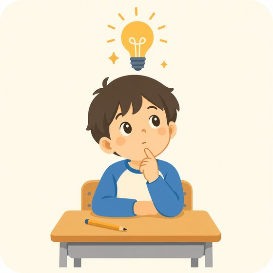
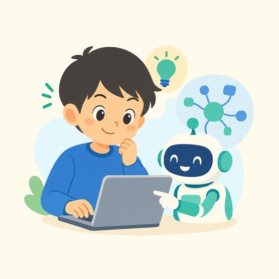
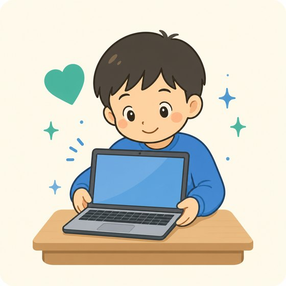
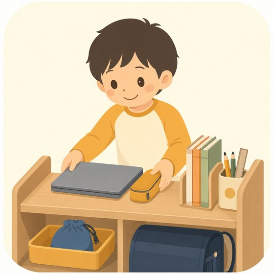

きょうしつの やくそく
みんなが たのしく 学べるように、8つの やくそくを まもろう！
1

きたら カードを「ピッ」
うけつけで にゅうたいしつカードの QRコードを かざそう。
かえるときも わすれずに「ピッ」。おうちの人に おしらせが とどくよ。
2
あいさつを しよう
きたら「こんにちは」、かえるときは「さようなら」。
あいさつを すると、きょうしつが もっと たのしくなるよ。
3

まずは じぶんで 考える
すぐに 答えを 見ないで、まず じぶんで やってみよう。
考えた 時間が、きみの 力に なるよ。
4

AIは 考えるための どうぐ
AIは「答えを うつす どうぐ」じゃないよ。
わからないところを 聞いて、じぶんの 言葉に して みよう。
5
なまえや じゅうしょは にゅうりょくしない
じぶんや 友だちの なまえ・じゅうしょ・でんわばんごう・学校の 名まえ・しゃしんは、 ぜったいに AIに 入れないで ね。
6
しずかに、ゆずりあって
まわりの 人も しゅうちゅう して います。
大きな こえや、ほかの 人の じゃまを するのは やめようね。
7

きかいは やさしく つかう
パソコンや タブレットは みんなの もの。
らんぼうに あつかわないで、こわれたら すぐ 先生に 教えてね。
8

かたづけて かえる
つかった ものは もとの ばしょへ。
つぎに つかう 人が うれしい きょうしつに しよう。
こまったら、すぐ 先生に 言おう
わからない・うまくいかない・気ぶんが わるい――どんなことでも だいじょうぶ。
ひとりで がまんしないで、こえを かけてね。
ASKデジタルアカデミー